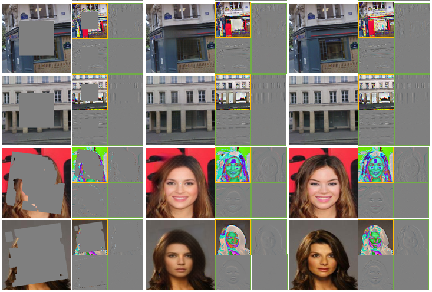

Image Inpainting Based on Multi-frequency ProbabilisticInference Model

Abstract
Image inpainting methods usually fail to reconstruct reasonable structure and fine-grained texture simultaneously. This paper handles this problem from a novel perspective of predicting low-frequency semantic structural contents and high-frequency detailed textures respectively, and proposes a multi-frequency probabilistic inference model(MPI model) to predict the multi-frequency information of missing regions by estimating the parametric distribution of multi-frequency features over the corresponding latent spaces. Firstly, in order to extract the information of different frequencies without any interference, wavelet transform is utilized to decompose the input image into low-frequency subband and high-frequency subbands. Furthermore, an MPI model is designed to estimate the underlying multi-frequency distribution of input images. With this model, closer approximation to the true posterior distribution can be constrained and maximum-likelihood assignment can be approximated. Finally, based on the proposed MPI model, a two-path network consisting of inference network(InferenceNet) and generation network(GenerationNet) is trained parallelly to enforce the consistency of global structure and local texture between the generated image and ground truth. We qualitatively and quantitatively compare our method with other state-of-the-art methods on Paris StreetView, CelebA, CelebAMask-HQ and Places2 datasets. The results show the superior performance of our method, especially in the aspects of realistic texture details and semantic structural consistency.
Framework
- Multi-frequency ProbabilisticInference Model (MPI-Model)

More Results
- Results for center mask
- Results for irregular mask